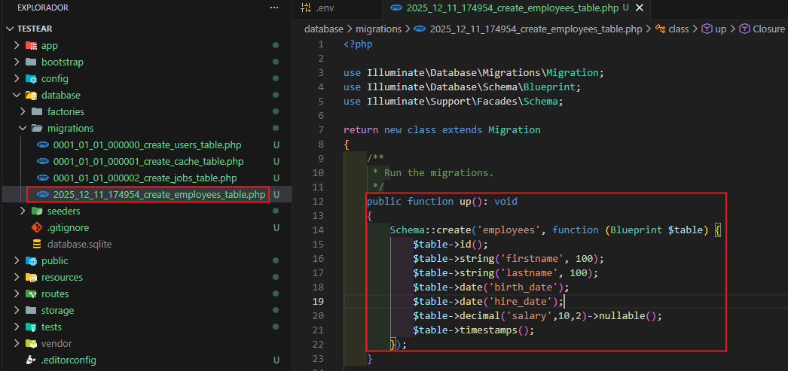
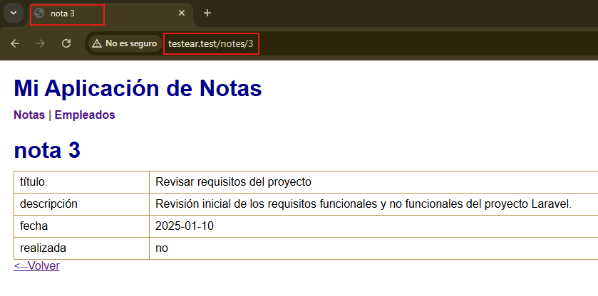
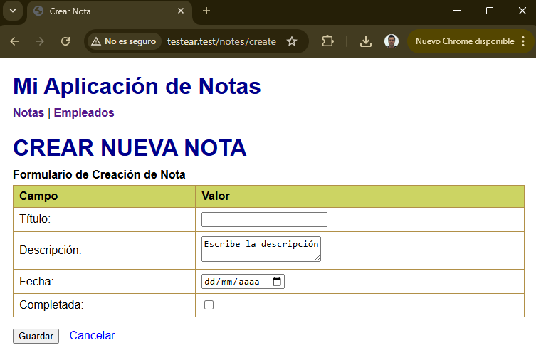
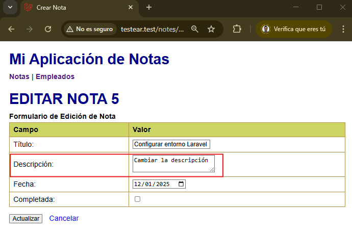
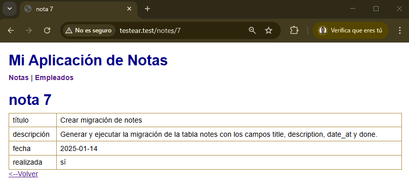
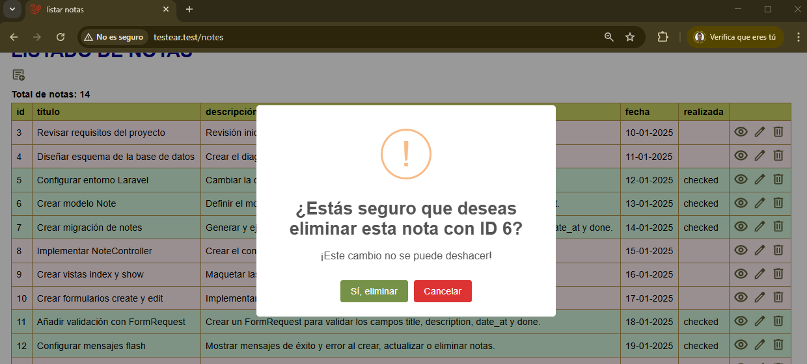

Activitat guiada 2¶
Activitat guiada 2¶
En esta pàgina treballes 5 criteris d'avaluació (RA5, RA6, RA8, RA9)
- RA5.c S'han utilitzat objectes i controls en el servidor per a generar l'aspecte visual de l'aplicació web en el client. (Activitat guiada: employees, notes i products)
- RA5.d S'han utilitzat formularis generats de manera dinàmica per a respondre als esdeveniments de l'aplicació web. (Activitat guiada: employees, notes i products)
- RA6.f S'han creat aplicacions web que permeten l'actualització i l'eliminació d'informació disponible en una base de dades (Activitat guiada: employees, notes i products)
- RA8.e S'han utilitzat estes tecnologies i frameworks, per a generar pàgines web que incloguen verificació de formularis. (Activitat guiada: employees, notes i products)
- RA9.e S'han utilitzat llibreries de codi i frameworks per a incorporar funcionalitats específiques a una aplicació web. (Activitat guiada: employees, notes i products)
Autoavaluació guardada només en este navegador · Mostra tot el que he de saber fer.
Pas 1. Configurar el fitxer .env i crear/executar migracions
Crearem un projecte que gestione empleats i notes.
-
Crea un projecte Laravel amb el nom, per exemple, practica2.
composer create-project laravel/laravel practica2 -
Base de dades A l'arrel del projecte trobem el fitxer de configuració
.env, on modifiquem els paràmetres:DB_CONNECTION=mysql DB_HOST=127.0.0.1 DB_PORT=3307 DB_DATABASE=practica2 DB_USERNAME=root DB_PASSWORD= -
Crear la taula
employeesmitjançant una migració amb l'estructura següent:
| Camp | Tipus | Restriccions |
|---|---|---|
id |
Clau primària, autoincremental, no nul | |
firstname |
string(100) |
No nul |
lastname |
string(100) |
No nul |
birth_date |
date |
No nul |
hire_date |
date |
No nul |
salary |
decimal(8,2) |
Pot ser nul |
created_at |
timestamp |
Automàtic |
updated_at |
timestamp |
Automàtic |
php artisan make:migration create_employees_table
database/migrations trobarem un fitxer com xxxx_xx_xx_xxxxxx_create_employees_table:
Schema::create('employees', function (Blueprint $table) {
$table->id();
$table->string('firstname', 100);
$table->string('lastname', 100);
$table->date('birth_date');
$table->date('hire_date');
$table->decimal('salary',10,2)->nullable();
$table->timestamps();
});

php artisan migrate

- Crear el model
Employeeconfigurat i operatiu (taula, clau primària, tipus i assignació massiva coherents amb l'estructura anterior).php artisan make:model Employee
Càrrega de dades de prova: importa l'annex SQL
Als recursos d'esta activitat hi ha un fitxer employees.sql amb 100 empleats ficticis per a importar a la taula employees.
Pas 2. Crear el controlador i els seus mètodes
Implementaràs rutes i un controlador que tornen llistats ordenats i filtrats, i mostraràs les dades en una vista Blade mitjançant una taula HTML amb columnes homogènies.
Crea un controlador EmployeeController per a centralitzar la lògica de consulta d'empleats. Dins d'ell implementaràs, com a mínim, els mètodes que tornen col·leccions d'empleats segons els criteris indicats més avall. Cada mètode ha de:
php artisan make:controller EmployeeController
- Obtindre els empleats aplicant el criteri d'ordenació o filtratge corresponent.
- Enviar el resultat a una vista Blade comuna (vegeu el punt 3) mitjançant una variable anomenada exactament
employees.
Mètodes que cal implementar:
- Llistat per ID ascendent (nom
byId): torna tots els empleats ordenats peremp_idde menor a major. - Llistat per cognoms i nom (nom
byLastName): torna tots els empleats ordenats perlastname(ascendent) i, en cas d'empat, perfirstname(ascendent). - Subconjunt per lletra inicial del cognom (nom
lastNameStartsWith): torna només els empleats elemp_lastnamedels quals comence per una lletra (si no es passa cap lletra, el sistema assumix la lletra “A” per defecte), ordenats perlastnameiemp_firstname(ascendent). - Subconjunt per any de naixement (nom
bornIn): torna només els empleats nascuts en un any (si no es passa cap any, el sistema assumix "1980” per defecte), ordenats perlastnameifirstname(ascendent).
Tots els mètodes tornaran la mateixa vista (vegeu el punt 3) i no han de repetir lògica de presentació al controlador.
Mètodes del controlador EmployeeController:
<?php
namespace App\Http\Controllers;
use Illuminate\Http\Request;
use App\Models\Employee;
class EmployeeController extends Controller
{
public function byId(){
$employees = Employee::orderBy('id', 'asc')->get();
return view('employees.index', compact('employees'));
}
public function byLastName(){
$employees = Employee::orderBy('emp_lastname', 'asc')
->orderBy('emp_firstname','asc')
->get();
return view('employees.index', compact('employees'));
}
public function lastNameStartsWith(string $letter='B'){
$employees = Employee::where('emp_lastname', 'LIKE', "$letter%")
->orderBy('emp_lastname', 'asc')
->orderBy('emp_firstname','asc')
->get();
return view('employees.index', compact('employees'));
}
public function bornIn(string $year='1980'){
$employees = Employee::where('emp_birth_date','like', "$year%")
->orderBy('emp_lastname', 'asc')
->orderBy('emp_firstname','asc')
->get();
return view('employees.index', compact('employees'));
}
}
Pas 3. Definir les rutes
Declara rutes GET que apunten als mètodes anteriors. Utilitza exactament estes URL per a homogeneïtzar les correccions:
| Ruta | Mètode del controlador | Descripció |
|---|---|---|
/employees/by-id |
byId |
Llistat ordenat per emp_id ascendent. |
/employees/by-lastname |
byLastName |
Llistat ordenat per cognoms i nom. |
/employees/filter-letter |
lastNameStartsWith |
Subconjunt: cognoms que comencen per “A”. |
/employees/filter-year |
bornIn |
Subconjunt: nascuts l'any 1990. |
Requisits de les rutes:
- Totes han de retornar la mateixa vista amb la variable
employees. - Utilitza noms de ruta coherents per a cadascuna (per exemple,
employees.byId,employees.byLastName,employees.starts,employees.born).
Rutes
Les rutes es troben a routes/web.php:
<?php
// ...
use App\Http\Controllers\EmployeeController;
// ...
Route::get('employees/by-id', [EmployeeController::class,'byId'])->name('employees.byId');
Route::get('employees/by-lastname', [EmployeeController::class,'byLastName'])->name('employees.byLastName');
Route::get('employees/filter-letter/{letter?}', [EmployeeController::class,'lastNameStartsWith'])->name('employees.starts');
Route::get('employees/filter-year/{year?}', [EmployeeController::class,'bornIn'])->name('employees.born');
Pas 4. Crear la vista
Crea una vista única employees/index.blade.php per als quatre casos. Esta vista ha de:
- Mostrar un títol clar del llistat.
- Si no hi ha registres a
employees, mostrar un missatge: “No hi ha empleats que complisquen el criteri.” - En cas contrari, presentar una taula HTML amb les columnes següents i en este ordre exacte:
| Columna mostrada | Procedix del camp |
|---|---|
| ID | emp_id |
| Cognoms | emp_lastname |
| Nom | emp_firstname |
| Edat | calculada a partir de emp_birth_date |
| Data de contractació | emp_hire_date formatada en YYYY-MM-DD |
Mostrar, damunt de la taula o com a “caption”, el total de registres del llistat.
Vista resources/views/employees/index.blade.php:
@extends('layouts.app')
@section('title', 'listar empleados')
@section('content')
<h1>LISTADO DE EMPLEADOS</h1>
{ No se hace @forelse para no sacar primero sí o sí la cabecera de la tabla }
@if ($employees->isEmpty())
<p class="no-results">No hay empleados que cumplan el criterio.</p>
@else
<table border=1>
<caption>Total de empleados: {{ $employees->count() }}</caption>
<thead>
<tr>
<th>id</th>
<th>apellidos</th>
<th>nombre</th>
<th>fecha nacimiento</th>
<th>edad</th>
<th>fecha de contratación</th>
</tr>
</thead>
<tbody>
@foreach ($employees as $item)
@php
// utilizamos la librería Carbon para utilizar métodos de fechas
// como age() o format()
$birthDate = \Carbon\Carbon::parse($item->birth_date);
$hireDate = \Carbon\Carbon::parse($item->hire_date);
@endphp
<tr>
<td>{{ $item->id }}</td>
<td>{{ $item->lastname }}</td>
<td>{{ $item->firstname }}</td>
<td>{{ $birthDate->format('d-m-Y') }}</td>
<td>{{ $birthDate->age }}</td>
<td>{{ $hireDate->format('d-m-Y') }}</td>
</tr>
@endforeach
</tbody>
</table>
@endif
@endsection
Notes de presentació:
- L'edat s'ha de calcular a partir de la data de naixement. Pots calcular-la al controlador o a la vista, però s'ha de mostrar com a nombre enter d'anys.
- La data de contractació s'ha de mostrar en format
YYYY-MM-DD. - Utilitza una taula llegible: capçalera amb títols, files amb cel·les alineades i un estil senzill però clar. No cal utilitzar CSS avançat.
Pas 5. Comprovacions parcials
Arribats a este punt, verifica manualment que:
/employees/by-id: mostra tots els registres ordenats per ID ascendent i les 5 columnes requerides./employees/by-lastname: mostra tots els registres ordenats per cognoms i, en cas d'empat, per nom. Es veuen les 5 columnes./employees/filter-letter: mostra només cognoms que comencen per A. Ordenació per cognoms i nom./employees/filter-year: mostra únicament els empleats nascuts el 1990. Ordenació per cognoms i nom.-
En tots els casos:
- Es mostra el total de registres llistats.
- Si no hi ha coincidències, apareix el missatge “No hi ha empleats que complisquen el criteri.”
Hauràs de fer captures de pantalla:
-
De cada ruta funcionant:
/employees/by-id/employees/by-lastname/employees/filter-letter/employees/filter-year
-
Del llistat de rutes definit (només noms i URI, sense codi font).
- Descripció breu de com calcules l'edat i com formates la data de contractació (dues o tres línies).
- Evidència de dades carregades: captura del total de files o vista parcial de la taula
employeesal teu gestor de BD.
Pas 6. Plantilla Blade i partials
Recursos per a fer els exemples d'este punt
Crear plantilla/layout
Abans de crear les nostres taules, models, controladors i rutes, dissenyarem una plantilla de vista Blade que ens servisca per a totes les vistes que creem a continuació (que "estenguen" la plantilla):
Crear un layout base a la ruta resources/views/layouts/app.blade.php:
<!DOCTYPE html>
<html lang="es">
<head>
<meta charset="UTF-8">
<title>
@yield('title')
</title>
<link rel="stylesheet" href="{{ asset('assets/css/style1.css') }}">
</head>
<body>
<header>
<h1>Mi Aplicación de Notas</h1>
@include('partials.nav')
</header>
<main>
@yield('content')
</main>
@stack('scripts)
</body>
</html>
D'esta plantilla app.blade.php observem que:
- Té dues referències
@yielda les quals, després, en la vista que l'estenga, haurem de fer referència amb la@sectioncorresponent. - Té un full d'estil que apunta a un fitxer
style1.cssde la carpeta públicaassets/img/(s'utilitza{{ asset('assets/css/style1.css') }}). - Té una referència
@stackque utilitzarem per a anar afegint codi (en este cas, scripts). - Inclou el codi de
nav.blade.php, que es troba a la rutaresources/views/partials.
Crear partial
Partial a resources/views/partials/nav.blade.php:
<nav>
<a href="{{ route('notes.index') }}">Notas</a> |
<a href="{{ route('employee.byId') }}">Empleados</a>
</nav>
Pas 7. Crear un circuit MVC ràpid per a rutes dinàmiques
1) Migració + taula
Utilitzar la taula notes amb els camps:
id(enter, autoincremental)title(string)description(text)date_at(date)done(boolean)
Crear la migració de la nota i el controlador:
a. Crear la migració i després el model:
php artisan make:migration create_notes_table
php artisan make:model Note
b. 🔝 O podem crear el model, la migració i el controlador amb una sola ordre:
php artisan make:model Note -mc
D'esta manera es creen estos tres recursos amb la sintaxi adequada (Note, xxxx_xx_xx_xxxxxx_create_notes_table i NoteController).
Obrim el fitxer de migració database/migrations/xxxx_xx_xx_create_notes_table.php i afegim els camps:
public function up() {
Schema::create('notes', function (Blueprint $table) {
$table->id();
$table->string('title')->unique();
$table->text('description')->nullable();
$table->date('date_at');
$table->boolean('done')->default(false);
$table->timestamps();
});
}
public function down() {
Schema::dropIfExists('notes');
}
Finalment, executem la migració:
php artisan migrate
Reiniciar les migracions
Si tenim algun problema perquè no hem creat la base de dades des de zero, podem eliminar les migracions anteriors amb:
php artisan migrate:reset
2) Model Note
Ara implementarem el model Note. Definirem els camps que es poden assignar massivament:
namespace App\Models;
use Illuminate\Database\Eloquent\Model;
class Note extends Model {
protected $fillable = [ 'title',
'description',
'date_at',
'done'
];
}
$fillable: definix quins camps es poden assignar en massa.$guarded: definix quins camps no es poden assignar.
3) Controlador NoteController:
Executa-ho només si no s'ha executat l'ordre php artisan make:model Note -mc
php artisan make:controller NoteController
Codificació del mètode show() al controlador app/Http/Controllers/NoteController.php:
//...
use App\Models\Note;
//...
public function show(Note $note)
{
return view('notes.show', compact('note'));
}
4) Ruta associada:
Ara que ja tenim el controlador i el mètode que gestionarà la ruta, i el model que es connectarà amb la base de dades, definirem la ruta a routes/web.php:
//...
use App\Http\Controllers\NoteController;
//...
Route::get('notes/{note}', [NoteController::class, 'show'])->name('notes.show');
5) Vista associada:
Finalment, ens queda crear la vista que mostrarà la informació de la nota amb l'ID rebut:
@extends('layouts.app')
@section('title', "nota $note->id")
@section('content')
<h1>nota {{ $note->id }}</h1>
@endsection
Pas 8. CRUD. Llistar totes les notes
1) Ruta per a llistar notes
//...
use App\Http\Controllers\NoteController;
//...
Route::get('/', [NoteController::class, 'index'])->name('notes.index');
2) Controlador
Mètode index, per a llistar totes les notes:
//...
use App\Models\Note;
//...
public function index()
{
$notes = Note::all();
return view('notes.index', compact('notes'));
}
3) Vista del llistat resources/views/notes/index.blade.php:
@extends('layouts.app')
@section('title', 'listar notas')
@section('content')
<h1>LISTADO DE NOTAS</h1>
<a href="{{ route('notes.create') }}" style="display:inline-block; text-decoration:none;">
<img src="{{ asset('assets/img/add.svg') }}" alt="Añadir Nota" title="Añadir Nota">
</a>
@if ($notes->isEmpty())
<p class="no-results">No hay notas que cumplan el criterio.</p>
@else
<table>
<caption>Total de notas: {{ $notes->count() }}</caption>
<thead>
<tr>
<th>id</th>
<th>título</th>
<th>descripción</th>
<th>fecha</th>
<th>realizada</th>
<th></th>
</tr>
</thead>
<tbody>
@foreach ($notes as $item)
@php
$date = \Carbon\Carbon::parse($item->date_at);
@endphp
<tr class="{{ $item->done ? 'done-yes' : 'done-no' }}">
<td>{{ $item->id }}</td>
<td>{{ $item->title }}</td>
<td>{{ $item->description }}</td>
<td>{{ $date->format('d-m-Y') }}</td>
<td>{{ $item->done ? 'checked' : '' }}</td>
<td>
<div style="display: flex; gap: 0.5rem;">
<a href="{{ route('notes.show', $item) }}" style="display:inline-block; text-decoration:none;">
<img src="{{ asset('assets/img/view.svg') }}" alt="Vista" title="Vista">
</a>
<a href="{{ route('notes.edit', $item) }}" style="display:inline-block; text-decoration:none;">
<img src="{{ asset('assets/img/edit.svg') }}" alt="Editar" title="Editar">
</a>
<form action="{{ route('notes.destroy', $item) }}" method="POST" style="display:inline">
@csrf
@method('DELETE')
<button type="submit" style="border: none; background: none; padding: 0; cursor: pointer;">
<img src="{{ asset('assets/img/delete.svg') }}" alt="Eliminar" title="Eliminar">
</button>
</form>
</div>
</td>
</tr>
@endforeach
</tbody>
</table>
@endif
@endsection

Pas 9. CRUD. Mostrar una nota individual
1) Ruta per a mostrar:
Route::get('/notes/show/{note}', [NoteController::class, 'show'])->name('notes.show');
2) Controlador:
En este cas també tenim dues maneres de rebre el paràmetre Note $note. En el primer cas rebem la nota i Laravel, per injecció de model, la busca per nosaltres; en el segon cas rebem l'ID i busquem la nota nosaltres.
Mètode show
-
🔝 Per injecció de model:
public function show(Note $note) { return view('notes.show', compact('note')); } -
Buscant per ID:
public function show($id) { $note = Note::findOrFail($id); return view('notes.show', compact('note')); }
3) Vista resources/views/notes/show.blade.php actualitzada:
@extends('layouts.app')
@section('title')
nota: {{ $note->id }}
@endsection
@section('content')
<h1>nota {{ $note->id }}</h1>
<table>
<tbody>
<tr>
<td>título</td>
<td>{{ $note->title }}</td>
</tr>
<tr>
<td>descripción</td>
<td>{{ $note->description }}</td>
</tr>
<tr>
<td>fecha</td>
<td>{{ $note->date_at->format('d/m/Y') }}</td>
</tr>
<tr>
<td>realizada</td>
<td>{{ $note->done ? 'sí' : 'no' }}</td>
</tr>
</tbody>
</table>
<a href="{{ route('notes.index') }}"> <--Volver </a>
@endsection
Podem observar que esta vista:
- Aplica la plantilla
app.blade.php. - Mostra el número de nota a la pestanya del navegador.
- Al camp de tipus data se li aplica el mètode
format('d/m/Y). - Per a mostrar el valor del camp
done(que és de tipusboolean) fa servir una expressió ternària. - Té un enllaç, al final, per a tornar a la vista que llista les notes, i ho fa amb el mètode
routei el nom de la ruta (notes.index).
Amb això, accedint a /notes/3 veurem:

Pas 10. CRUD. Crear una nota nova
Per a poder crear una nota necessitem tres coses:
1) Ruta
Route::get('/notes/create', [NoteController::class, 'create'])->name('notes.create');
2) Controlador Mètode create, per a mostrar el formulari de creació:
public function create() {
return view('notes.create');
}
3) Vista de creació resources/views/notes/index.blade.php
Una vista que continga el formulari de creació: resources/views/notes/create.blade.php.
@extends('layouts.app')
@section('title', 'Crear Nota')
@section('content')
<h1>CREAR NUEVA NOTA</h1>
<form action="{{ route('notes.store') }}" method="POST">
@csrf
<table>
<caption>Formulario de Creación de Nota</caption>
<thead>
<tr>
<th>Campo</th>
<th>Valor</th>
</tr>
</thead>
<tbody>
<tr>
<td><label for="title">Título:</label></td>
<td><input type="text" id="title" name="title" required></td>
</tr>
<tr>
<td><label for="description">Descripción:</label></td>
<td><textarea id="description" name="description"
placeholder="Escribe la descripción" required></textarea></td>
</tr>
<tr>
<td><label for="date">Fecha:</label></td>
<td><input type="date" id="date" name="date_at" required></td>
</tr>
<tr>
<td><label for="done">Completada:</label></td>
<td><input type="checkbox" id="done" name="done" value="1"></td>
</tr>
</tbody>
</table>
<div style="margin-top: 1rem;">
<button type="submit">Guardar</button>
<a href="{{ route('notes.index') }}" style="margin-left: 10px; text-decoration: none; color: blue;">Cancelar</a>
</div>
</form>
@endsection

Pas 11. CRUD. Guardar la nota nova
Igual que en el cas anterior, per a guardar la nota necessitem dues coses: una ruta que gestione l'enviament del formulari i un mètode al controlador que processe les dades i guarde la nota a la base de dades. Al final, redirigirem al llistat de notes.
1) Ruta per a guardar:
Route::post('/notes/store', [NoteController::class, 'store'])->name('notes.store');
2) Controlador:
Per a guardar la nota, podem utilitzar diferents mètodes.
Ací en mostrem dues maneres:
public function store(Request $request) {
$note = new Note();
$note->title = $request->input('title');
$note->description = $request->input('description');
$note->date = $request->input('date_at');
$note->done = $request->input('done') ? 1 : 0;
$note->save(); // Redirigir a la lista de notas
return redirect()->route('notes.index');
}
🔝 Millor utilitzant el mètode create:
public function store(Request $request) {
Note::create($request->all());
return redirect()->route('notes.index');
}
Explicacions addicionals:
@csrfprotegix contra atacs CSRF (Cross-Site Request Forgery).$request->all()torna totes les dades enviades al formulari.- Laravel valida automàticament que el token CSRF hi siga present. Si no hi és, llançarà un error.
Com funciona el CSRF?
- Laravel genera un token únic per a cada sessió d'usuari.
- Este token s'inclou en cada formulari generat per Laravel.
- Quan s'envia el formulari, Laravel verifica que el token enviat coincidix amb el de la sessió.
- Si no coincidixen, Laravel llança un error 419 (Page Expired).
- Això evita que un atacant envie formularis en nom de l'usuari sense el seu consentiment.
Pas 12. CRUD. Editar una nota
1) Ruta per a l'edició
Route::get('/notes/edit/{note}', [NoteController::class, 'edit'])->name('notes.edit');
2) Controlador
Tenim diverses maneres de rebre el paràmetre note. En la primera rebem l'ID i busquem la nota, per a poder passar-la a la vista:
public function edit($id) {
$note = Note::findOrFail($id);
return view('notes.edit', compact('note'));
}
🔝 En la segona manera, rebem el model Note. Així és Laravel qui s'encarrega de buscar la nota. Quan treballem amb models, esta és la manera recomanada (amb injecció de model):
public function edit(Note $note) {
return view('notes.edit', compact('note'));
}
3) Vista d'edició resources/views/notes/edit.blade.php
En este cas hem definit la ruta amb el mètode PUT. Este mètode és el que s'utilitza per a actualitzar les dades d'un recurs existent. Però com ho podem fer si les opcions de form només permeten GET i POST? Laravel ens oferix una solució senzilla: la directiva @method('PUT'). Esta directiva simula el mètode PUT en formularis HTML i ha d'estar dins del formulari i abans dels inputs.
<form id="sample-form" action="somepage.php" method="POST">
@csrf
@method('PUT')
<!-- Otros campos del formulario -->
</form>
Amb este format el formulari s'enviarà com a PUT, encara que el mètode del formulari siga POST.
@extends('layouts.app')
@section('title', 'Editar Nota')
@section('content')
<h1>EDITAR NOTA {{ $note->id }}</h1>
<form action="{{ route('notes.update', $note->id) }}" method="POST">
@csrf
@method('PUT')
<table>
<caption>Formulario de Edición de Nota</caption>
<thead>
<tr>
<th>Campo</th>
<th>Valor</th>
</tr>
</thead>
<tbody>
<tr>
<td><label for="title">Título:</label></td>
<td><input type="text" id="title" name="title" value="{{ $note->title }}" required></td>
</tr>
<tr>
<td><label for="description">Descripción:</label></td>
<td><textarea id="description" name="description" required>
{{ $note->description }}
</textarea></td>
</tr>
<tr>
<td><label for="date_at">Fecha:</label></td>
<td><input type="date" id="date" name="date_at" value="{{ $note->date_at) }}" required></td>
</tr>
<tr>
<td><label for="done">Completada:</label></td>
<td>
<input type="hidden" name="done" value="0">
<input type="checkbox" id="done" name="done" value="1" {{ $note->done ? 'checked' : '' }}>
</td>
</tr>
</tbody>
</table>
<div style="margin-top: 1rem;">
<button type="submit">Actualizar</button>
<a href="{{ route('notes.index') }}" style="margin-left: 10px; text-decoration: none; color: blue;">Cancelar</a>
</div>
</form>
@endsection
@method('PUT')simula el mètode HTTP PUT en formularis HTML (que només permeten GET i POST).
Pas 13. CRUD. Actualitzar la nota
1) Ruta per a actualitzar:
Route::put('/notes/update/{note}', [NoteController::class, 'update'])->name('notes.update');
2) Controlador:
En este cas també tenim dues maneres de rebre el paràmetre Note $note. En el primer cas rebem la nota i Laravel, per injecció de model, la busca per nosaltres; en el segon cas rebem l'ID i busquem la nota nosaltres.
-
🔝 Per injecció de model:
public function update(Request $request, Note $note) { $note->update($request->all()); return redirect()->route('notes.index'); } -
Buscant per ID:
public function update(Request $request, $id) { $note = Note::findOrFail($id); $note->update($request->all()); return redirect()->route('notes.index'); }
Pas 14. CRUD. Eliminar una nota
1) Ruta per a eliminar:
Route::delete('/notes/destroy/{note}', [NoteController::class, 'destroy'])->name('notes.destroy');
2) Controlador:
Com en els casos anteriors, tenim dues maneres de rebre el paràmetre Note $note. En el primer cas rebem la nota i Laravel, per injecció de model, la busca per nosaltres; en el segon cas rebem l'ID i busquem la nota nosaltres.
-
🔝 Per injecció de model:
public function destroy(Note $note) { $note->delete(); return redirect()->route('notes.index'); } -
Buscant per ID:
public function destroy($id) { $note = Note::findOrFail($id); $note->delete(); return redirect()->route('notes.index'); }
Pas 15. CRUD. Prova completa
Ara provarem totes les funcionalitats del CRUD:
Aspecte de l'exemple
Com que no utilitzem gens de CSS, l'aspecte és molt bàsic. En un projecte real, caldria aplicar estils CSS per a millorar l'aparença i la usabilitat.
1) Llistar notes: accedix a la ruta / per a veure el llistat de notes.
2) Crear una nota: fes clic al botó "Añadir Nota", ompli el formulari i envia'l.
En fer clic a "Añadir Nota" s'accedix a /notes/create:

Una vegada omplit el formulari, l'enviem al servidor (ruta /notes/store) i tornem al llistat de notes.

Podem veure la nota creada i com apareixen els enllaços per a editar-la i eliminar-la.
3) Editar una nota: fes clic a "Editar" al costat d'una nota, modifica les dades i envia el formulari.
En fer clic a "Editar" s'accedix a /notes/edit/{id}:

Una vegada modificat el formulari, l'enviem al servidor (ruta /notes/update/{id}), que actualitza la nota i ens redirigix al llistat de notes.

4) Mostrar una nota: fes clic al títol d'una nota per a veure'n els detalls.
En fer clic al títol d'una nota s'accedix a /notes/show/{id}:

Una vegada vista, premem "tornar" i ens redirigix al llistat de notes.
5) Eliminar una nota: fes clic a "Eliminar" al costat d'una nota.
En fer clic a "Eliminar" s'envia un formulari amb el mètode DELETE a la ruta /notes/destroy/{id}, que elimina la nota i ens redirigix al llistat de notes.
Confirmació de l'eliminació
En un projecte real, és recomanable afegir una confirmació abans d'eliminar una nota per a evitar eliminacions accidentals.
Un exemple seria este:
6) Canvia al fitxer resources/views/notes/index.blade.php el codi per a eliminar una fila:
<form id="delete-form-{{ $item->id }}"
action="{{ route('notes.destroy', $item->id) }}"
method="POST"
style="display:inline">
@csrf
@method('DELETE')
<button type="button"
onclick="confirmDelete({{ $item->id }})"
style="border: none; background: none; padding: 0; cursor: pointer;">
<img src="{{ asset('assets/img/delete.svg') }}" alt="Eliminar" title="Eliminar">
</button>
</form>
7) Afig al final del fitxer resources/views/notes/index.blade.php el @push('scripts'):
@push('scripts')
<script>
function confirmDelete(id) {
Swal.fire({
title: '¿Estás seguro que deseas eliminar esta nota con ID ' + id + '?',
text: '¡Este cambio no se puede deshacer!',
icon: 'warning',
showCancelButton: true,
confirmButtonColor: '#769248ff',
cancelButtonColor: '#d33',
confirmButtonText: 'Sí, eliminar',
cancelButtonText: 'Cancelar'
}).then((result) => {
if (result.isConfirmed) {
document.getElementById('delete-form-' + id).submit(); // Enviar el formulario
}
});
}
</script>
@endpush
8) I a la plantilla resources/views/layouts/app.blade.php afig la línia:
<script src="https://cdn.jsdelivr.net/npm/sweetalert2@11"></script>


Pas 16. CRUD. Repàs
Desenvolupament d'un CRUD de productes
L'objectiu d'esta pràctica és aprendre a aplicar formularis, rutes, controladors i vistes en Laravel per a desenvolupar un CRUD complet per al recurs Product.
Amb esta activitat, aprendràs a treballar amb el patró MVC (Model-Vista-Controlador), a gestionar dades amb formularis i a utilitzar les eines d'Eloquent per a crear, llegir, actualitzar i eliminar productes de la base de dades. A més, practicaràs la implementació de vistes amb Blade i l'ús de rutes dinàmiques.
En acabar, hauràs de ser capaç de:
- Crear i executar migracions per a definir l'estructura d'una base de dades.
- Implementar un controlador amb tots els mètodes CRUD.
- Crear vistes Blade per a presentar dades i gestionar formularis.
- Gestionar dades d'entrada i d'eixida mitjançant formularis, amb les directives
@csrfi@method.
Instruccions¶
Seguix els passos següents. Verifica que tot funciona correctament abans de passar al pas següent.
Si alguna part del procés no està clara, consulta la documentació anterior o busca exemples dins del projecte que has treballat anteriorment.
Preparar l'entorn¶
1) Accedix al teu projecte Laravel.
Si no tens cap projecte en marxa, pots utilitzar el que vas crear en la prova anterior o crear-ne un de nou amb composer create-project laravel/laravel nombre_del_proyecto (per exemple, amb el nom de projecte testear).
2) Inicia el servidor.
Assegura't que el servidor funciona: inicia docker compose up -d (o, si utilitzes Laragon, arranca els serveis corresponents a Nginx i MySQL).
3) Crea un model i una migració nous per al recurs Product.
Utilitza l'ordre d'Artisan per a crear un model Product juntament amb la seua migració. Això generarà un fitxer per a crear la taula de productes a la base de dades.
Crear la taula i el model¶
4) Edita la migració de productes.
Obri el fitxer de migració generat i definix els camps següents per a la taula products. Estos camps inclouen el nom del producte, una descripció, el preu, l'estoc i les dates de creació/actualització automàtiques.
L'estructura de la taula haurà de ser:
| Camp | Tipus de dada | Restriccions / Descripció |
|---|---|---|
id |
bigIncrements |
Clau primària, autoincremental |
name |
string(255) |
Nom del producte, no nul |
description |
text |
Descripció del producte |
price |
decimal(8,2) |
Preu del producte, no nul |
stock |
integer |
Quantitat en estoc, no nul, per defecte 0 |
created_at |
timestamp |
Data de creació (automàtic) |
updated_at |
timestamp |
Data d'actualització (automàtic) |
5) Executa la migració.
Una vegada hages definit els camps, executa la migració per a crear la taula a la base de dades.
php artisan migrate
Verifica que la taula s'ha creat correctament a la base de dades.
Dades de prova
Als recursos d'esta activitat hi ha un fitxer products.sql amb 15 productes ficticis per a importar a la taula products.
6) Configura el model Product.
Al fitxer del model Product, has de definir les propietats que permeten l'assignació massiva dels camps. Això es fa amb la propietat $fillable:
protected $fillable = ['name', 'description', 'price', 'stock'];
Crear el controlador resource¶
7) Genera el controlador de recursos.
Utilitza Artisan per a crear un controlador de recursos. Això generarà automàticament els mètodes necessaris per a gestionar les operacions CRUD. Els mètodes que cal implementar seran: index, create, store, show, edit, update i destroy.
php artisan make:controller ProductController --resource
8) Configura el controlador.
Al fitxer generat ProductController.php, implementa la lògica necessària per a gestionar els productes. Recorda que Laravel ja genera els mètodes bàsics (index, create, store, etc.), però hauràs de completar la lògica específica de cadascun.
index: mostra tots els productes.create: mostra el formulari per a crear un producte nou.store: guarda el producte nou a la base de dades.show: mostra els detalls d'un producte concret.edit: mostra el formulari per a editar un producte.update: actualitza un producte existent a la base de dades.destroy: elimina un producte de la base de dades.
Definir les rutes¶
9) Declara les rutes necessàries per al CRUD.
A routes/web.php, afig la ruta de tipus resource per al controlador ProductController. Laravel generarà automàticament totes les rutes necessàries.
Afig esta línia:
//...
use App\Http\Controllers\ProductController;
//...
Route::resource('products', ProductController::class);
Això crearà les rutes necessàries per a gestionar les operacions CRUD del recurs Product.
10) Verifica que les rutes s'han registrat correctament.
Utilitza l'ordre php artisan route:list --path=products per a assegurar-te que les rutes estan definides correctament.
Crear les vistes¶
11) Crea la carpeta per a les vistes.
A resources/views, crea una carpeta nova anomenada products. En esta carpeta crearàs les vistes per a les operacions CRUD.
Vistes necessàries:
Crea les vistes següents dins de la carpeta product/:
12) index.blade.php: mostra tots els productes en una taula. Esta vista ha de llistar tots els productes i oferir enllaços per a crear, editar i eliminar productes.
13) create.blade.php: formulari per a crear un producte nou.
14) edit.blade.php: formulari per a editar un producte existent.
15) show.blade.php: mostra els detalls d'un producte.
Provar el CRUD complet¶
16) Accedix a /product per a veure el llistat de productes.
17) Crea un producte nou i verifica que apareix al llistat.
18) Edita un producte i confirma que s'actualitza correctament.
19) Mostra els detalls d'un producte des de l'enllaç.
20) Elimina un producte i assegura't que desapareix del llistat.
CSS (opcional)¶
Pots crear un fitxer CSS per a la vista index.blade.php i un altre per als formularis create.blade.php, edit.blade.php i show.blade.php.
Recorda
Per a mostrar fitxers que tinguem a la carpeta public, crea (és convenient) una carpeta dins anomenada assets/css i allotja-hi el teu CSS.
A més, en Laravel, hi podràs accedir amb la funció asset:
<link rel="stylesheet" href="{{ asset('assets/css/style1.css') }}">
Assegura't d'enllaçar estos fitxers CSS a les vistes corresponents.
Pas 17. Validar
Recorda
Sempre hem de validar les dades abans d'emmagatzemar-les i abans d'actualitzar-les. Mai no hem de donar per fet que el que arriba del formulari és segur o correcte.
Crear el FormRequest personalitzat
1) Genera una classe de validació nova StoreProductRequest.
2) Afig les regles de validació següents:
name: obligatori, cadena de text, entre 3 i 255 caràcters.description: obligatori, cadena de text, mínim 10 caràcters.price: obligatori, numèric, mínim 0.01.stock: obligatori, enter, mínim 0.
3) (Opcional) Si el teu formulari conté caselles de verificació (checkboxes) o altres camps que cal adaptar abans de validar, pots utilitzar el mètode prepareForValidation() per a normalitzar-los.
Aplicar el FormRequest al controlador
4) Fes els canvis necessaris al controlador ProductController per a utilitzar StoreProductRequest i validar les dades als mètodes store() i update().
5) Afig també missatges flash per a les operacions que redirigixen al llistat de productes, perquè l'usuari reba retroalimentació.
Missatges:
- Producto creado correctamente.
- Producto actualizado correctamente.
- Producto eliminado correctamente.
Pas 18. Mostrar errors als formularis
1) Als formularis de creació i d'edició de productes, mostra una llista amb els errors de validació a l'inici del formulari. Si no hi ha errors, no mostres res.
2) Els errors estaran en un div amb la classe alert alert-danger. Pots utilitzar CSS per a donar-li estil.
3) Davall de cada camp del formulari, mostra l'error específic amb la directiva @error. Estos errors es poden mostrar en una etiqueta <small> o en algun contenidor <div>, com preferisques. Tindran l'estil alert alert-danger o un estil personalitzat. Podem utilitzar CSS per a donar-los estil.
4) Recorda utilitzar old() per a mantindre els valors introduïts per l'usuari en cas d'error de validació.
Crear el partial per als missatges del sistema
5) Crea un partial anomenat messages.blade.php per a mostrar els missatges flash.
- Si el missatge és d'èxit, utilitza la classe
flash alert alert-success. - Si el missatge és d'error, utilitza la classe
flash alert alert-danger.
6) Afig el partial al layout principal perquè es mostre en totes les vistes. D'esta manera, qualsevol missatge flash apareixerà automàticament en totes les vistes.
Pas 19. Comprovar les rutes del CRUD
1) Mostrar les rutes del projecte:
php artisan route:list --path=product
2) Comprova que es llisten totes les rutes REST del recurs product, incloent-hi index, create, store, edit, update, show i destroy.
Provar les validacions i els missatges
3) Intenta crear un producte amb menys de 3 caràcters al nom o sense descripció. → Has de veure missatges d'error al formulari.
4) Crea un producte vàlid. → Ha de redirigir al llistat amb el missatge “Producto creado correctamente.”
5) Edita un producte i canvia'n els valors. → Ha de mostrar “Producto actualizado correctamente.”
6) Elimina un producte. → Ha de mostrar “Producto eliminado correctamente.”
Pas 20. API REST per a products
La creació d'una API REST per a products es treballa ara en la pràctica guiada de la unitat 10, juntament amb la validació, els errors en JSON, l'autenticació amb tokens, les proves i la documentació.